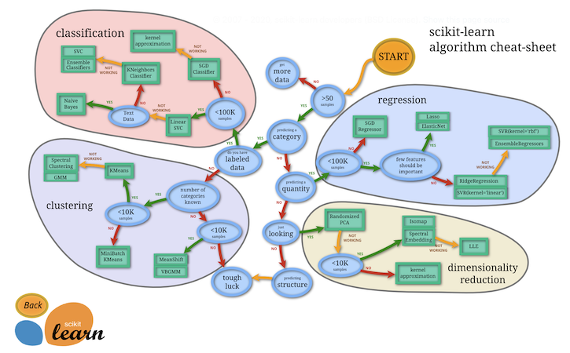
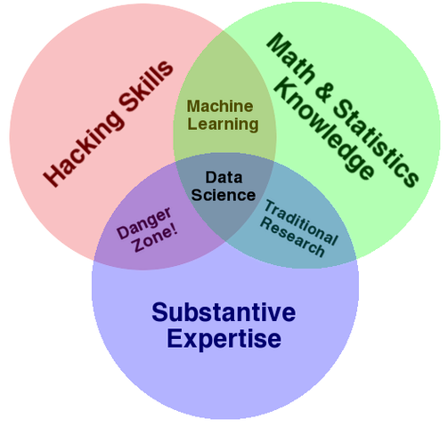

目錄¶
- 數據分析在零售金融之應用情境說明（P.3）
- 數據分析管線（問題定義、資料整理、分析、呈現）（P.17）
- 教學＋實作：Tableau、Power BI、SQL、Python 工具角色與分工說明（P.90）
- 實作：請上課的土銀同仁以部門為分組依據，提出日常業務中與「數據分析管線」相關的一個問題，講師會據此和小組成員收斂聚焦成果發表的成品與實作工具（P.98）
- 基於數據分析主題問卷的填答結果，以部門為分組挑選一個期末成果發表題目（P.99）
數據分析在零售金融之應用情境說明¶
在 Kaggle Competitions 搜尋 Banking 並以 Relevance 排序¶
- Elo Merchant Category Recommendation
- Santander Customer Satisfaction
- Santander Customer Transaction Prediction
- Santander Value Prediction Challenge
- Home Credit Default Risk
來源：https://www.kaggle.com/search?q=banking+in%3Acompetitions
在 Kaggle Competitions 搜尋 Banking 並以 Relevance 排序（續）¶
- Binary Classification with a Bank Churn Dataset
- Home Credit - Credit Risk Model Stability
- Santander Product Recommendation
- Sberbank Russian Housing Market
- BNP Paribas Cardif Claims Management
來源：https://www.kaggle.com/search?q=banking+in%3Acompetitions
Elo Merchant Category Recommendation¶
- 要求參賽者預測客戶的忠誠度分數，以協助 Elo 為持卡人提供個人化的活動。
- 參賽者處理去識別化的信用卡交易數據，分析消費頻率與地點等行為模式。
- 模型目標是精準預測忠誠度，避免無效的行銷投放。
Santander Customer Satisfaction¶
- 目標是找出 Santander 銀行的不滿意客戶。
- 資料包含數百個匿名特徵，考量了銀行與客戶之間的複雜互動。
- 參賽者在高度不平衡的樣本中，精準預測哪些客戶最有可能在早期離開銀行。
Santander Customer Transaction Prediction¶
- 預測特定客戶在未來是否會進行交易。
- 資料經過匿名與縮放處理，且包含大量雜訊，挑戰參賽者的特徵工程能力。
- 對於銀行制定個人化服務與預算規劃具有參考價值。
Santander Value Prediction Challenge¶
- 預測客戶的潛在交易價值。
- 特徵極多且分佈稀疏，考驗模型的泛化能力。
- 透過這項預測，銀行能更有效地識別出高價值的潛在客戶。
Home Credit Default Risk¶
- 預測貸款違約機率，旨在幫助那些缺乏信用紀錄的人群獲得金融服務。
- 參賽者需整合通訊、交易與其他貸款機構的數據，評估申請人的還款能力。
- 透過機器學習量化風險，能有效提高金融服務的普及度。
Binary Classification with a Bank Churn Dataset¶
- 預測銀行客戶是否會流失，數據包含信用評分、年齡與餘額等特徵。
- 參賽者需利用這類結構化數據，分析哪些因素最能反映客戶離開銀行的意圖。
- 此競賽常作為機器學習入門練習，重點在於特徵工程與處理數據不平衡。
Home Credit - Credit Risk Model Stability¶
- 預測貸款申請人的違約風險，特別強調模型在時間的預測穩定性。
- 參賽者需處理來自多個金融機構的異質數據，並應對隨著時間推移而產生的數據變動。
- 目標是打造一個既精準又能在未來數季維持效能的穩健信用模型。
Santander Product Recommendation¶
- 多分類與推薦系統問題，目標預測客戶下個月會購買哪些金融產品。
- 競賽提供了客戶過去的持有紀錄、薪資與居住地等行為特徵。
- 參賽者必須從歷史交易動向中，精準捕捉客戶對特定產品（如信用卡、儲蓄帳戶）的潛在需求。
Sberbank Russian Housing Market¶
- 房價預測，要求預測俄羅斯房屋的成交價格。
- 數據集不僅包含房屋本身的硬體特徵，還結合了複雜的宏觀經濟指標（如匯率、通膨）。
- 參賽者必須在劇烈波動的經濟環境下，找出影響房地產市場走勢的關鍵因素。
BNP Paribas Cardif Claims Management¶
- 預測哪些索賠案件需要額外的審核或文件。
- 數據集由大量經過匿名化的分類與連續特徵組成，特徵之間的關係非常模糊。
- 參賽者需在不了解原始特徵含義的情況下，建立高效的分類模型以提升理賠效率。
數據分析在零售金融之應用情境¶
- 風險管理：Home Credit 信用卡、信貸；Sberbank 房貸。
- 客戶流失：Santander Customer Satisfaction
- 精準行銷：Santander Product Recommendation、Elo
- 審核效率： BNP Paribas、Home Credit 信用卡、信貸；Sberbank 房貸。
數據分析管線（問題定義、資料整理、分析、呈現）¶
接到問題的情緒反應¶
煩躁。- 平常心。
接到問題的工作反應¶
拖延。- 問題定義、歸類、解構。
好的問題定義¶
- 具體、能夠填寫出特定幾個面向的資訊。
- 可討論。
- 可行性。
能夠填寫出特定幾個面向的資訊¶
- 關鍵的決策者、利益關係人。
- 評估問題是否有解決的指標非常明確（包含多個以上時可以說明交集或聯集）。
- 可能的行動方案為何。
- 給定的限制為何。
- 問題解決、行動方案的支持及資源。
- 其他。
問題歸類：以語意區分¶
- 封閉式問題。
- Yes/No 是非題：我們的使用者在轉帳上的需求是否因為電支或LINE Pay的普及而正在被稀釋？
- 確認題：我們的使用者在轉帳上的需求因為電支或LINE Pay的普及而正在被稀釋，是吧？
- 開放式問題：
- 有 Wh- 字首的問題：How can we achieve XX% penetration for mobile cash withdraw before end of 2025?
問題歸類：以回覆期望值區分（6 作為最高分）¶
- 回覆事實（Remember）：「CBDC 對於銀行的影響是什麼？」問題中的 CDBC 全稱為？
- 解釋（Understand）：「CBDC 對於銀行的影響是什麼？」問題中的 CDBC 為何？
- 應用（Apply）：CBDC 對於哪些產業可能產生影響？
- 分析（Analyze）：CBDC 對於銀行的影響是什麼？
- 評估（Evaluate）：根據 CBDC 對於銀行的影響，整體而言是機會？威脅？
- 創造（Create）：請訂定本行因應央行發行 CDBC 的行動計畫。
來源：Bloom's Taxonomy
問題歸類：以目的區分¶
- 調研式問題：長期的外幣產品經營狀況？驅動外幣收益的原因是什麼？
引導式問題：你不覺得應該要在 App 新增TWQR支付功能嗎？情緒型問題：你不覺得 App 中沒有TWQR支付功能是場悲劇嗎？- 方案型問題：How can we achieve XX% penetration for mobile cash withdraw before end of 2025?
從問題歸類回推解題難度¶
- Yes/No 是非題（難度中）：破題 Yes/No，提供支援素材佐證答覆。
- 開放式問題：
- What/Which 類型問題（難度低）：不需要操心。
- Who/Where/When 類型問題（難度中）：視為預測，破題預測結果，提供訓練資料、模型與評估佐證答覆。
- Why 類型問題（難度中）：破題答案，提供支援素材佐證答覆。
- How 類型問題（難度高）：破題答案，提供支援素材佐證答覆，提供行動方案以及專案管理。
- 期望值愈高的問題愈棘手。
- 調研式問題比方案型問題簡單。
問題解構的心法¶
There is only one way to eat an elephant: a bite at a time.
問題解構的心法與選舉最大的秘密（？）¶
選舉最大的秘密，就是票多的贏票少的輸。
韓國瑜
好的問題解構¶
- M.E.C.E. 互斥且周延準則。
- 邏輯樹。
- 議題樹。
- 假說推論樹。
議題樹：前向推導¶
- 如何存更多錢？
- 增加收入。
- 賺取業務獎金。
- 賺取加班費。
- 調整投資組合。
- 減少支出。
- 換季折扣。
- 快時尚。
- 現金回饋。
- 增加收入。
假說推論樹：後向推導¶
- 我可以透過調整投資組合來存更多錢。
- 我不是從事業務性質工作。
- 我不想改變消費習慣。
- 我目前的投資策略過於保守。
- 減少指數投資、增加個股投資。
- 透過借貸增加報酬率。
- 增加波段操作。
假說推論樹：後向推導試試看¶
我們的使用者在轉帳上的需求是否因為電支或LINE Pay的普及而正在被稀釋？
- 是。
- 找尋支持論證的資料：銀行轉帳筆數、金額的比例呈現下降趨勢；電支、LINE PAY 筆數、金額的比例呈現上升趨勢。
- 否。
- 找尋支持論證的資料：銀行轉帳筆數、金額的比例呈現持平、上升趨勢；電支、LINE PAY 筆數、金額的比例呈現持平、下降趨勢。
問題解構與分析其實是同義的¶
- 問題解構很像自然語言的斷詞斷句、關鍵字詞擷取。
- 將某個有興趣的問題拆分為數個小問題。
- 研究小問題與有興趣的問題之間的關係。
- Yes/No 是非題很適合應用假說推論樹。
不同導向的分析¶
- 資料導向的分析。
- 商業導向的分析。
- 報酬導向的分析。
- 財報導向的分析。
- 交易導向的分析。
- ...等。
不同導向源自於不同的背景、經歷與訓練¶
- 資料導向：資料科學、數據分析、軟體工程的背景。
- 商業導向：商業分析、企業管理的背景。
- 報酬導向：企業經營的背景。
- 財報導向：基本面投資的背景。
- 交易導向：技術面投資的背景。
能簡短說明何謂「資料分析」嗎¶
撇除所有華麗的詞彙，「資料分析」是透過以邏輯、事實以及量化為基準來解決問題的方法。
太陽底下沒有新鮮事：常見的十個（商業）問題（1-5）¶
- 進入一個新的市場。
- 產業分析。
- 併購。
- 新產品策略。
- 定價策略。
因應而生的分析框架¶
- 增進分析的效率、品質、可靠性與強韌性。
- 實踐 DRY(Don’t Repeat Yourself)準則。
太多的分析框架就像冰淇淋店的冰櫃¶

商業導向的分析師¶
- 常春藤系統（3Cs、4Ps、波特五力...等）
- 企管顧問公司系統（BCG 矩陣、麥肯錫七步驟...等）
- 資產負債表、現金流量表、損益表分析。
- ...等。
資料導向的分析師¶
- Gartner 分析遞增模型（The Gartner Analytic Ascendancy Model）。
- 資料科學金字塔需求（The Data Science Hierarchy of Needs）。
- 資料科學管線（The Data Science Pipeline）。
- ...等。
不同導向、不同的專注¶
- 商業導向專注在推論邏輯。
- 資料導向專注在資訊價值。
- 談論到「分析」的時候會產生一定程度的混淆，特別是多樣化的專業背景。
- 不論何種導向的分析，都有多元的框架。
我願變成童話裡¶
- 有一個泛用的檢定可以應對所有的假說問題。
- 有一個泛用的模型可以應對所有的預測問題。
- 有一個泛用的框架可以應對所有的副總難題。
Scikit-Learn：挑選適當的預測器¶

來源：https://scikit-learn.org/stable/tutorial/machine_learning_map/index.html
在給定的限制下最大化效用函數、最小化成本函數¶
A computer program is said to learn from experience E with respect to some class of tasks T and performance measure P if its performance at tasks in T, as measured by P, improves with experience E.
Tom Mitchell
- 我們沒有自信說哪個模型是「最棒」的，但我們或許能夠說在手邊可取得的模型中有一個最合適的。
- 我們沒有自信說哪個框架是「一體適用」，但我們或許能夠說某些框架是相對較泛用的。
常見的資料科學文氏圖：Substantive expertise matters¶

來源：http://drewconway.com/zia/2013/3/26/the-data-science-venn-diagram
泛用程度較高的分析手法（IMHO）¶
- 採用混成（Hybrid）的手法：
X + YX: 主流、常見、聽眾喜歡的分析框架。Y: 自己所擅長的。
- 例如我自己喜歡的組合：
X: 簡化、微調的企管顧問公司系統。Y: 資料科學管線。
混成手法的要訣¶
- 問題定義、歸類與解構：在「人心不足蛇吞象」已經耳提面命，不再贅述。
- 先畫靶再射箭：
- 後向推導（Backward induction）。
- 採用假說推論樹優先於議題樹，避免發散。
- 「同理」關鍵的決策者、利益關係人。
後向推導（Backward induction）¶
Decide what you would like your obituary to say and live the life to deserve it.
Warren Buffett in his final letter to shareholders.
混成手法的要訣：文獻蒐集與資料科學管線¶
- 文獻蒐集：太陽底下沒有新鮮事。
- 資料科學管線：
- 數據不是佐證的唯一形式；但能夠找到能支持論述的數據能強化力道。
- 先畫靶再射箭仍然適用，「給定洞察找資料」比「給定資料找洞察」來得收斂、有效率。
- 同樣也是一個「反覆循環」的流程。
混成手法的要訣：Bruce Lee, Founder of Jeet Kune Do¶
Be formless, shapeless, like water.
資料科學管線：Wrangle¶
- Import, Tidy, Transform 合稱為 Wrangle。
- 掌握常見的結構化、非結構化檔案：
.csv,.txt,.json,.db,.xlsx - 掌握常見的資料結構。
- 撰寫能夠重複使用的程式：善用函數、類別、模組（或稱函式庫）。
資料科學管線：掌握常見的資料結構（以 Python 為例）讓 Wrangle 如魚得水¶
- 用一個二元樹來決定基礎資料結構：
- 是否需要做集合運算？是：
set - 是否需要鍵值對應？是：
dict - 是否需要變動？是：
list/ 否：tuple
- 是否需要做集合運算？是：
- 用需求來決定進階資料結構：
- 向量、矩陣與張量的運算：
numpy.ndarray - 具有鍵值對應特性的向量：
pandas.Series - 結構式表格資料：
pandas.DataFrame
- 向量、矩陣與張量的運算：
資料科學管線：Visualise¶
- 視覺化的基礎：資料類型映射為 Aesthetics
- Aesthetics 的維度：
- 軸。
- 形狀。
- 顏色。
- 大小、粗細。
- 其他。
資料科學管線：Model¶
- 我會盡量避免使用不曾 "Build a prototype from scratch/semi-scratch" 的模型。
- 我會優先使用具可解釋性的模型，例如 Regression/Tree-based/Bayesian...etc.
- 「能夠部署且能夠既有系統串接」的模型不論強弱，都應該被優先偏好。
- 分類模型除了採用混淆矩陣（Confusion matrix）做指標，也應該加入成本矩陣（Cost matrix）或效益矩陣（Benefit matrix）。
- 偽陽性、偽陰性的成本。
- 真陽性、真陰性的效益。
資料科學管線：Communicate¶
- 和「故事力」為承先啟後的環節。
- 「先畫靶再射箭」做得好，基本上溝通、故事力就成功了一半。
- 從「常見的資料科學文氏圖」我們可以知道一個傑出的資料分析師/資料科學家：
- 對科學計算暸若指掌。
- 對資訊科技感到飢渴。
- 對商業模式感到興趣。
- 對溝通說服充滿耐性。
從好到傑出¶
- 在問題定義、歸類與解構的環節更上一層樓。
- 掌握順位排序與資源整合。
- 在溝通說服環節更上一層樓。
在問題定義、歸類與解構的環節更上一層樓¶
- 快速辨識決策者、利益關係人與自己的共同利益。
- 視參與者為同伴，盡量避免帶著過強的防衛心。
- 熱情地、高參與度地、客觀地並帶著能夠被指導的心態。
- 易地而處、帶著高度同理心。
- 有耐性地聆聽。
有耐性地聆聽：A Group of Well-Educated Adults and Joey Certainly Knows¶

掌握順位排序與資源整合¶
- 衡量財務效益與行動難易度，辨識出財務效益高且行動難度低的方案。
- 掌握 80/20 法則。
- 藉由整合責任、時間表與具體步驟創造有效的行動方案。
- 如果人力許可，邀請專業的專案經理/產品經理加入。
在溝通說服環節更上一層樓¶
- 暸解聽眾。
- 自然語言藝術師。
- 我斗膽曲解亞里斯多德說服的要素。
- 試著準備兩個額外的選項。
- 留意常見邏輯謬誤。
暸解聽眾：投入與產出不必是一比一¶
- 準備好 TL; DR 的部分。
- 我花 80% 的時間（或心力）做 Wrangle，但它可能只需要佔 5% 的報告時間。
- 文不一定比表糟糕、表不一定比圖糟糕。
暸解聽眾：我的聽眾喜歡六人行 Friends、我想試著解釋相對論的某個概念¶
(No) From a sufficient distance, any line segment or object in a higher dimension appears as a single point in a lower dimension (e.g., a line segment viewed from far away).
(Yes)
Chandler: You're right. I have no excuses. I was totally over the line.
Joey Tribbiani: Over the line? You... you... you're so far past the line that you can't even see the line! The line is a dot to you!
Friends - The One Where Chandler Crosses the Line, S04E07
暸解聽眾：我的聽眾喜歡六人行 Friends、我想試著解釋賽局理論的某個概念¶
(No) Perfect information is a situation where all players in a game or all participants in a market have knowledge of all relevant information in the system.
(Yes)
Joey: They know you know.
Rachel: Ugh, I knew it! Oh I cannot believe those two!
Phoebe: God, they thought they can mess with us! They’re trying to mess with us?! They don’t know that we know they know we know!
Friends - The One Where Everybody Finds Out, S05E14
自然語言藝術師¶
- 言者有意無意、聽者者有心無心。
- 一個XX，各自表述（我保證表面沒有在酸）。
- 範例：
- 「社群網站最大的成就，就是讓每個人都有話語權。」
- 「今天停止上班、停止上課。」
- 「2025年(114年)9-10月迎來4次連假，包括教師節(3日)、中秋節（3日）、國慶日（3日）、台灣光復節(3日)。」
我斗膽曲解亞里斯多德說服的要素：將邏輯留到最後用¶
- 情感 Pathos
- 信譽 Ethos
- 邏輯 Logos
準備兩個額外的選項¶
- 第一好。
- 第二好：把自己希望決策者挑選的放在這。
- 第三好。
留意常見邏輯謬誤¶
- Thou shalt not commit logical fallacies
- 不犯任何邏輯謬誤是不太可能的，但覺得哪種說法「好像」怪怪的，可以檢索對應。
- （Pathos）我對你這麼好，凡事聽我的準沒錯：訴諸情感謬誤。
- （Ethos）我前 9 次是否都有將獲利匯回來給您？這次也會，請您放心：賭徒謬誤。
- 檢視自己快速做出的推論（捷思）有無常見邏輯謬誤：因果謬誤、合成謬誤、訴諸權威...等。
指派給自己的資料分析解題¶
- 如何成為資料分析師
- 找出章魚里
指派給自己的資料分析解題：如何成為資料分析師¶
- 我的
X+YX: 經濟學的供給需求理論。Y: 資料科學管線。
- 定義「資料分析師」：能夠透過以邏輯、事實以及量化指標為基準來解決問題的人士。
技能供給與職缺需求的交點¶
- 技能供給，資料科學的問卷調查。
- 職缺需求，徵才網站的職缺描述。
定義「如何成為」¶
- 目標描述。
- 現況評估。
- 學習地圖。
資料分析師的技能供給：https://www.kaggle.com/c/kaggle-survey-2022¶
- 主要工作內容。
- 使用、推薦程式語言。
- 整合開發環境。
- 視覺化套件。
- 商業智能軟體。
- 機器學習框架。
- 關聯式資料庫。
資料科學團隊面試官訪談¶
- 資料分析師/資料科學/約會交友 APP
- 資深講師/教育訓練/外商軟體公司。
- 副理/信用模型/銀行。
- 資料工程師/資料科學/外送 APP
- 經理/資料科學/電信公司。
- 經理/資料科學/保險公司。
- 副理/整合行銷/銀行。
- 副理/商業智能/電商。
訪談八位面試官三個問題來驗證技能供給和職缺需求的交點¶
- 您希望初階資料分析師分別在程式語言、統計、機器學習、視覺化與資料庫五個面向所具備的程度為何？若以 1 非常陌生、5 為非常熟稔，您的期待是？
- 在進行初階資料分析師的面試時，請和我們分享您通常會問的三個「技術問題」。
- 在進行初階資料分析師的面試時，請和我們分享您通常會問的三個「非技術問題」。
指派給自己的資料分析解題：找出章魚里¶
- 我的
X+YX: 自然語言的 Word Embedding 理論。Y: 資料科學管線。
- 楔子：什麼是章魚里？
- 每逢選舉，投開票當天各家媒體都會派人到章魚里駐守，連線直播開票現場報導。
什麼是章魚里¶
- 目前台灣有 22 個縣市、360 餘個鄉鎮市區、7700 餘個村鄰里。
- 「章魚里」指的是指特定村鄰里的得票率，跟最終結果非常相近，讓這個特定村里可以成為觀察選戰的指標。
- 由於人口結構變動，每次與全國得票率相似的村鄰里也會有所改變。
章魚里報導的不精準¶
- 人口結構會變動、選舉有不同類型，將一個特定村鄰里訂為長年不變的章魚里是明顯不合理的。
- 「得票率跟最終結果非常相近」的定義非常模糊。
- 有的報導以得票率最高者與全國得票率的誤差來評定。
- 有的報導以得票率最高及次高者與全國得票率的總和誤差來評定。
怎麼計算比較合理¶
- 將全國得票率視為向量 $\vec{a} = \{a_1, a_2, ..., a_n\}$，其中 $a_1$ 表示 1 號候選人的全國得票率、$a_2$ 表示 2 號候選人的全國得票率，以此類推 $a_n$ 表示 n 號候選人的全國得票率。
- 將村鄰里得票率視為向量 $\vec{b} = \{b_1, b_2, ..., b_n\}$，其中 $b_1$ 表示 1 號候選人的村鄰里得票率、$b_2$ 表示 2 號候選人的村鄰里得票率，以此類推 $b_n$ 表示 n 號候選人的村鄰里得票率。
- 那我們的問題就可以收斂到比較向量 $\vec{a}$ 與向量 $\vec{b}$ 的相似程度。
衡量兩個向量的相似度¶
- 餘弦相似度（cosine similarity）能夠用來衡量兩個向量的相似度，$cos(\theta)$ 是一個介於 $[-1, 1]$ 範圍的值。
- 當兩個向量是比例關係（proportional），餘弦相似度為 1，表示兩向量相同。
- 當兩個向量是垂直的（orthogonal），餘弦相似度為 0；當兩個向量是反向的（oppositve），餘弦相似度為 -1，這都表示兩向量極其相異。
如何找出章魚里¶
- 首先計算全國得票率向量 $\vec{a}$，以 2024 年總統副總統選舉有三組候選人為例 $\vec{a} = \{a_1, a_2, a_3\}$
- 接著計算 7700 餘個村鄰里的向量 $\vec{b_i} = \{b_{i1}, b_{i2}, b_{i3}\}$，其中 $b_{i1}$ 表示 1 號候選人在第 i 個村鄰里得票率、$b_{i2}$ 表示 2 號候選人在第 i 個村鄰里得票率、$b_{i3}$ 表示 3 號候選人在第 i 個村鄰里得票率。
- 再計算 7700 餘個村鄰里的向量 $\vec{b_i}$ 與全國得票率向量 $\vec{a}$ 之間的餘弦相似度 $S_C(\vec{a}, \vec{b_i})$
- 最後依餘弦相似度 $S_C(\vec{a}, \vec{b_i})$ 遞減排序，就能夠找出台灣 2024 年總統副總統選舉的章魚里。
資料來自中選會選舉及公投資料庫¶
- 2024 ー 第16任總統副總統選舉
- 下載各項統計表 -> 各投票所得票明細及概況(excel檔，ZIP壓縮)
延伸優化：商業分析應用面¶
- 抽樣民調、焦點團體訪談不僅在政治領域中是重要的工具，也是商業領域相當常見的消費者研究途徑。
- 除了質疑既有作法的不合理處，也要能提出更適當的作法並且說服組織的相關決策者。
- 懂得尋找一個與母體分佈相似的樣本來進行問卷調查、焦點訪談，能夠為公司帶來具高度參考性的消費者回饋。
- 如果民調公司需要在有限預算下進行下屆縣市長選舉民調，請依最近一次的縣市長選舉資料，在每個縣市推薦數個章魚里（或章魚鄉鎮市區）給民調公司。
TL; DR¶
- 人心不足蛇吞象：面對難題，我們可以從問題定義、歸類、解構著手進行。
- 橫看成嶺側成峰：檢視自己的專長與習慣，找出配適的框架。
- 金聲玉振集大成：採用混成的手法建立自己的端到端分析步驟。
- 言有意聽亦有心：在溝通說服環節更上一層樓，從「好」蛻變成「傑出」。
- 捋袖揎拳豎橫眉：兼具動腦的聰穎與動手的勤快。
教學＋實作：Tableau、Power BI、SQL、Python 工具角色與分工說明¶
資料科學管線（The Data Science Pipeline）中的應用場景¶
- Tableau、Power BI：Visualise, Communicate
- SQL: Import, Tidy, Transform
- Python: Program

為什麽 Tableau、Power BI、SQL、Python?¶
問卷中的兩個問題¶
- Q12: What programming languages do you use on a regular basis? (Select all that apply)
- Q36: Do you use any of the following business intelligence tools? (Select all that apply)
ks.plot_survey_summary(question_index="Q12", n=2)
![No description has been provided for this image]()
ks.plot_survey_summary(question_index="Q36", n=2)
![No description has been provided for this image]()